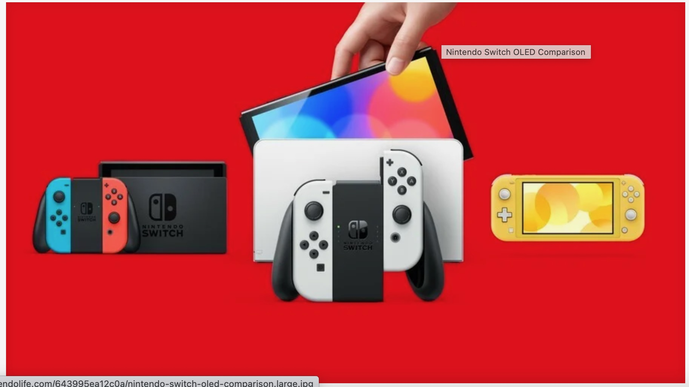

Gaming
my favorite things i enjoy the most is playing video games, i remember as a kids i was playing minecraft on my ipad with my friend and cousins we would start a new world on survival mode and the goals is to get supplies to build a house to survive from monsters and try to find ore to build armor and weapons to defeat the ender dragon. as of now i play a lot of mario games because i grew up loving super mario bros i even have at least all the character plush or toys and i have a nintendo switch console to play new or revised the first party games with my close friends, but sometime i like to play something new from different franchsie that i didn't grew up as a kids such as pokemon, kirby, zelda and metroid,but sometime you have to play something new than revised the games again when you get bored off, unfortunately my parent would let me get another different console because it was too expensive and need the money for the home and wont let me buy a 3ds because the screen is too small and it will hurt my eye.
